For elliptic sections, with one axis of length  parallel to the
parallel to the
 -axis and the other of length
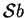 parallel to the
-axis and the other of length
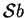 parallel to the  -axis, the
domain is again given by (7.60) (see
fig. 7.5).
-axis, the
domain is again given by (7.60) (see
fig. 7.5).
The forced flow solution (Lamb 1932, p. 587), is
| 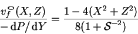 | (7.66) |
Although equation (7.20) could be solved for
by using the Jones-Furry solution (7.24) as a particular
integral and the inverse hyperbolic cosine conformal
mapping (Carslaw & Jaeger 1959, pp. 439-40),
a possible form for the solution is suggested by those in
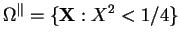, equation (7.24),
and
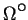, equation (7.65):
| 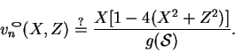 | (7.67) |
Contours of the vertical component of velocity due to buoyancy, 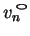, are displayed for elliptic sections of various spanwise aspect ratio in figure 7.6.
| 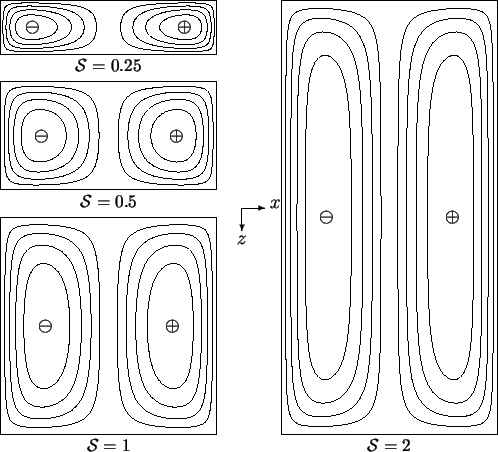 |
Notice that the solution for the circular cylinder
(7.65) is regained
for
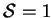, while
| 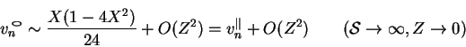 | (7.69) |
| 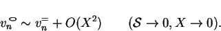 | (7.70) |
Apart from the simplicity of the result (7.68), the elliptic
section is remarkable for two reasons. First, the velocity profile in the
plane  has the same odd-symmetric cubic shape as the Jones-Furry flow
(7.24) for all values of
has the same odd-symmetric cubic shape as the Jones-Furry flow
(7.24) for all values of  ; only the amplitude varies. The second
is the comparative ease with which the thermal boundary conditions
(7.2) may be imposed. Consider the cavity or duct to be
surrounded by a highly conducting solid in which, at large distances, the
temperature gradient is uniform and parallel to the
; only the amplitude varies. The second
is the comparative ease with which the thermal boundary conditions
(7.2) may be imposed. Consider the cavity or duct to be
surrounded by a highly conducting solid in which, at large distances, the
temperature gradient is uniform and parallel to the  -axis. The problem
of the temperature distribution in the solid is analogous to that for
potential flow relative to an elliptic cylinder moving uniformly along the
axis. From the solution to the latter problem
(Lamb 1932, p. 84), it can be seen that the temperature at
the section boundary varies linearly with
-axis. The problem
of the temperature distribution in the solid is analogous to that for
potential flow relative to an elliptic cylinder moving uniformly along the
axis. From the solution to the latter problem
(Lamb 1932, p. 84), it can be seen that the temperature at
the section boundary varies linearly with  ; i.e. (7.2)
applies with
; i.e. (7.2)
applies with  . If the vapour mass fraction exerted by the boundaries
is a function of temperature,
and 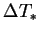 is small enough for this to be linearized, then the same
applies to the boundary conditions on
. If the vapour mass fraction exerted by the boundaries
is a function of temperature,
and 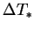 is small enough for this to be linearized, then the same
applies to the boundary conditions on  (7.5).
(7.5).